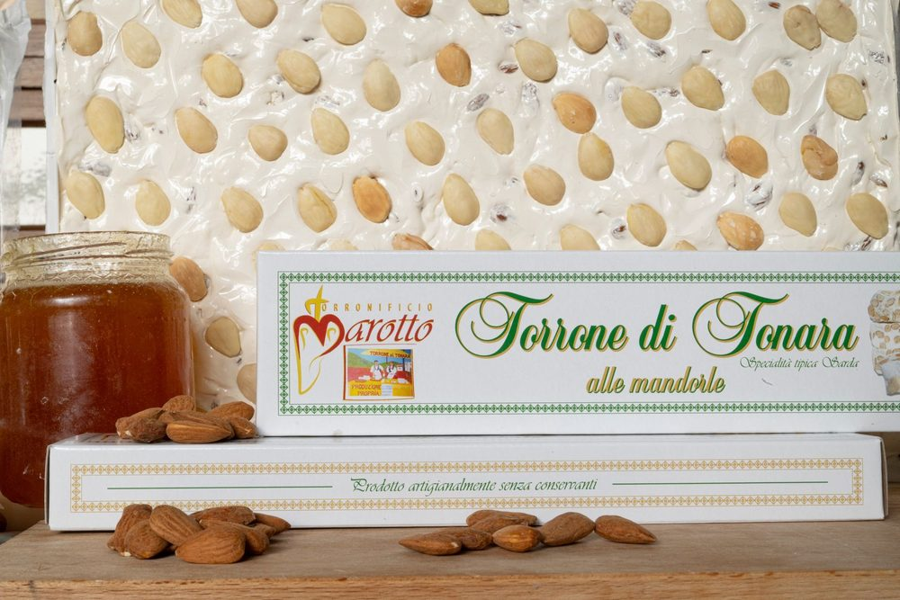
Alle mandorle
Mandorle selezionate: gusto delicato e consistenza equilibrata. Il fiore all’occhiello della casa.
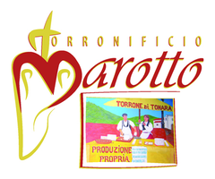
Chiama 0784 63824Miele, mandorle, noci e nocciole. Nessun conservante, nessun processo industriale. Un laboratorio di famiglia nato alla fine dell’Ottocento.
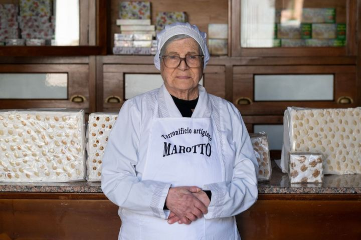
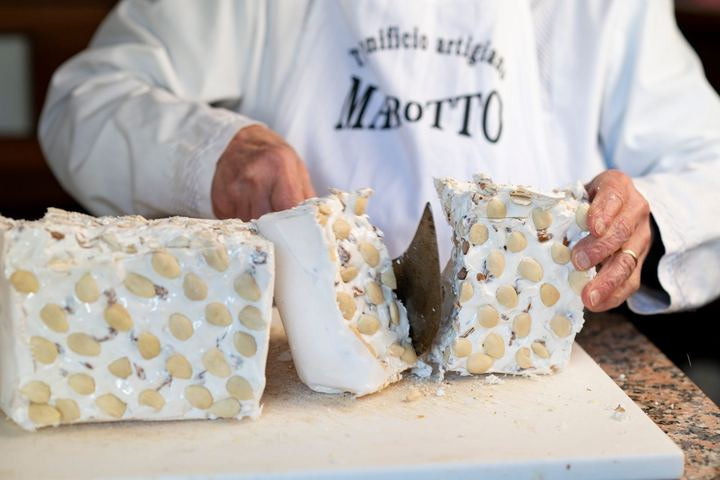
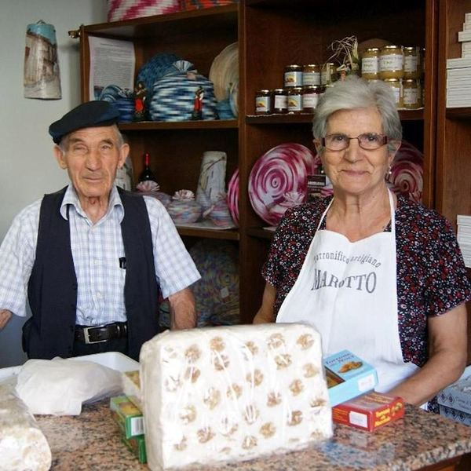
Nato alla fine dell’Ottocento e rinnovato negli anni Sessanta: le ricette passano di generazione in generazione.
L’obiettivo è sempre stato lo stesso: un prodotto genuino e fedele alla tradizione di Tonara, piccolo centro nel cuore della Sardegna, noto da secoli per la sua cultura dolciaria.
Il torrone è il prodotto simbolo del laboratorio: miele, albumi e frutta secca, lavorati lentamente fino a una consistenza compatta ma morbida al taglio.
Accanto ai classici, versioni aromatizzate con mirto, limone o arancia.
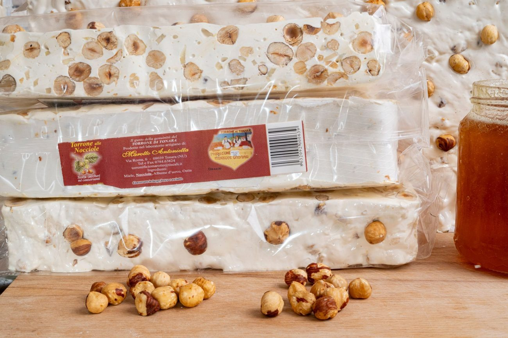

Mandorle selezionate: gusto delicato e consistenza equilibrata. Il fiore all’occhiello della casa.
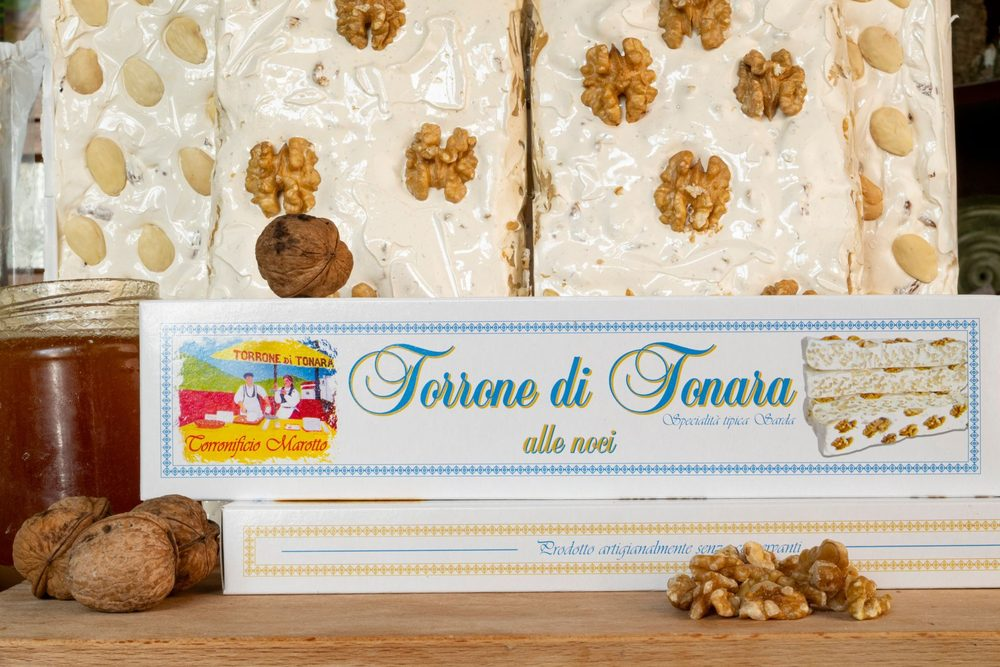
Una nota più intensa, struttura marcata e sapore deciso.
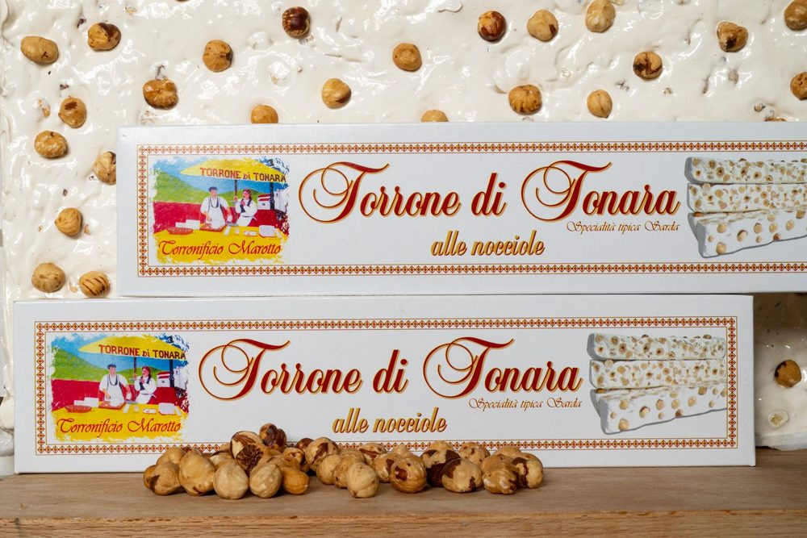
Nocciole e miele, nella stessa lavorazione manuale degli altri gusti.
fasi di lavorazione
conservanti e additivi artificiali
gusti tra classici e aromatizzati
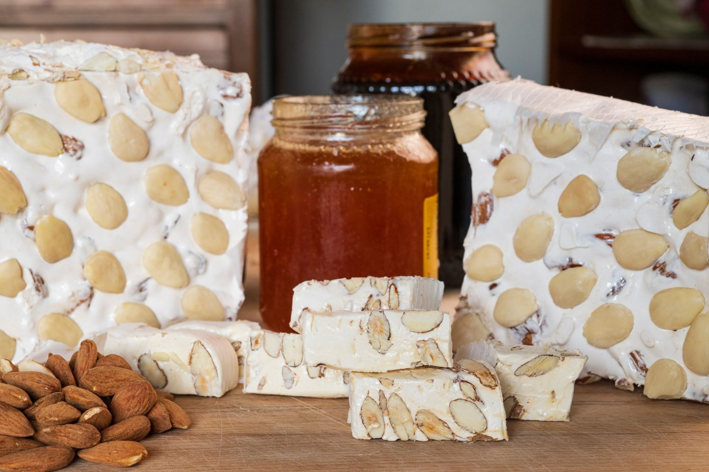
Il miele è l’ingrediente principale e si cuoce a temperatura controllata: è ciò che distingue il torrone sardo da altri torroni.
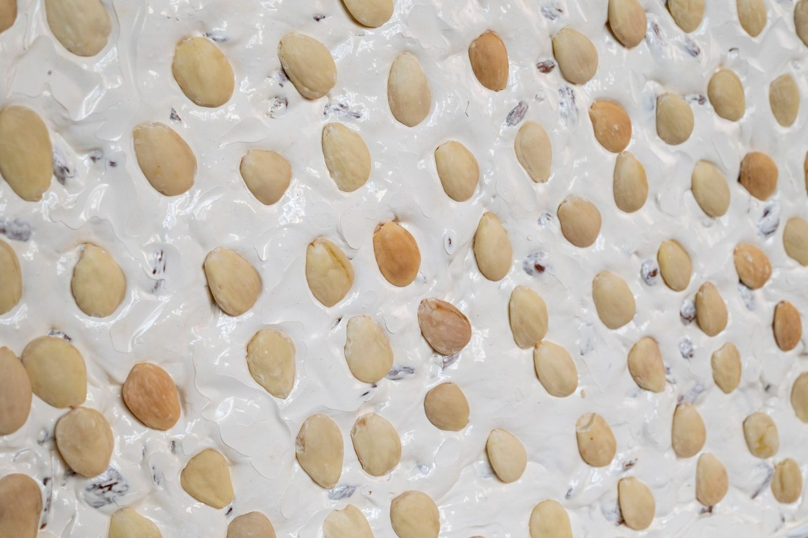
Gli albumi vengono montati e amalgamati al miele cotto, con lavorazione manuale e i tempi che servono.
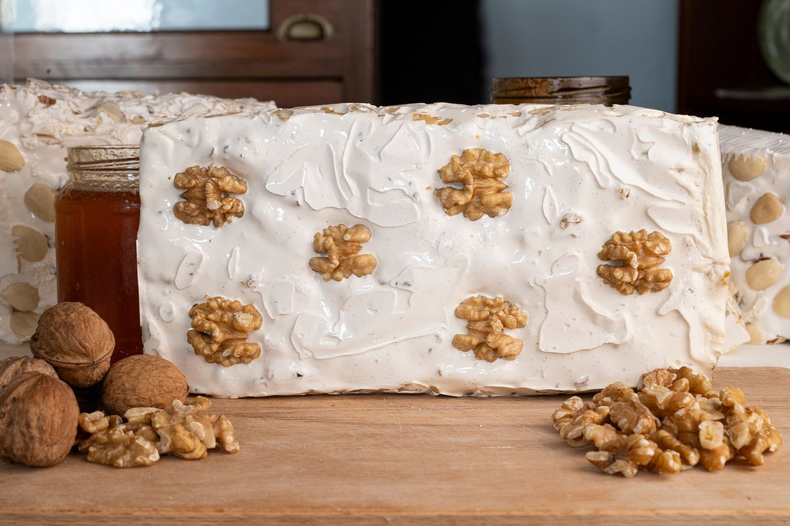
Mandorle, noci o nocciole entrano nell’impasto: la frutta secca è scelta con cura per ogni variante.
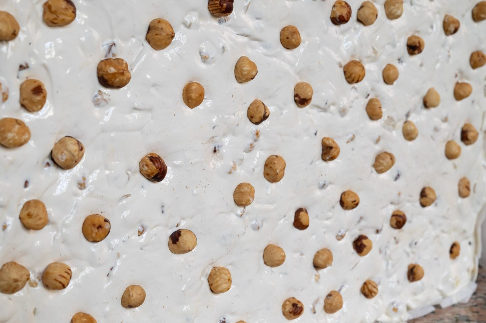
Il torrone riposa prima di essere tagliato: così mantiene profumo e struttura. Nessuna scorciatoia industriale.
Il laboratorio è anche negozio: si entra, si assaggia, si sceglie il torrone e le altre specialità dolciarie artigianali.
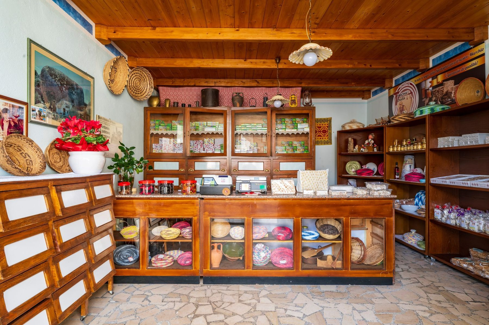
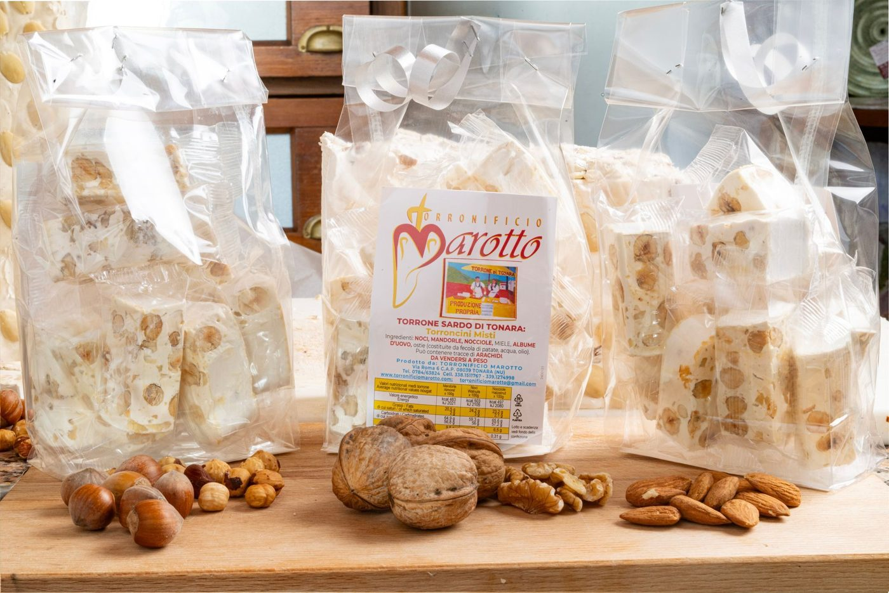
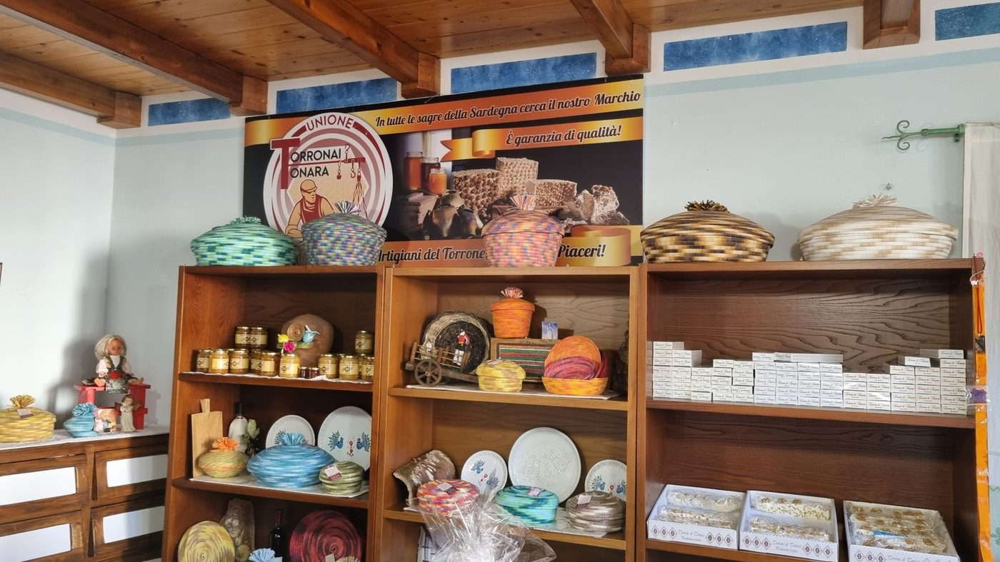
Il torrone è disponibile in diversi formati, adatti al consumo familiare e alla confezione regalo. Per cesti natalizi e spedizioni chiama o scrivi su WhatsApp.
National Geographic ha dedicato un articolo al torrone Marotto: articolo del 2018 →
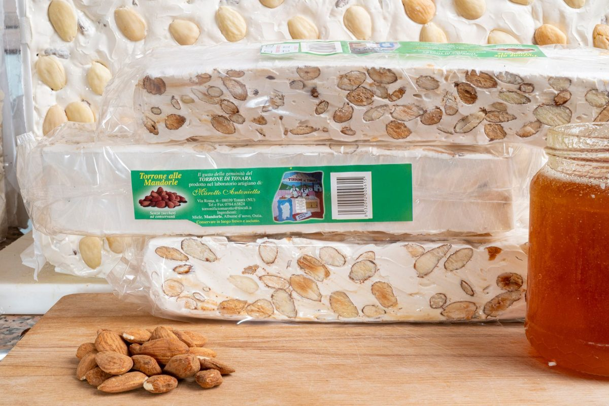
Tonara è in provincia di Nuoro, nel cuore della Sardegna, nota da secoli per la sua cultura dolciaria.
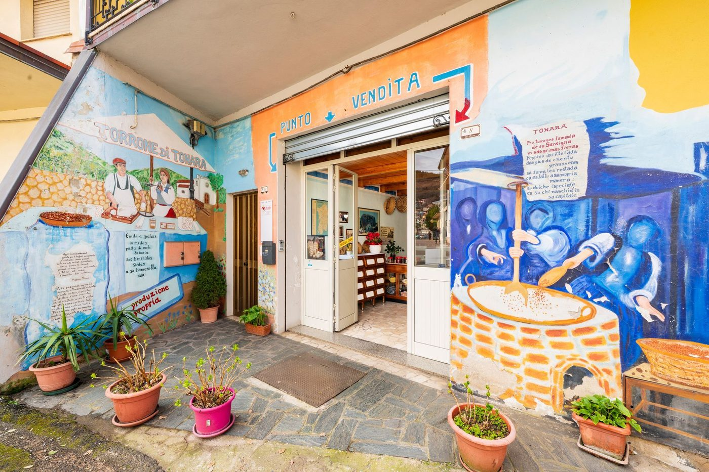
Via Roma 6, Tonara
IndicazioniTelefono fisso